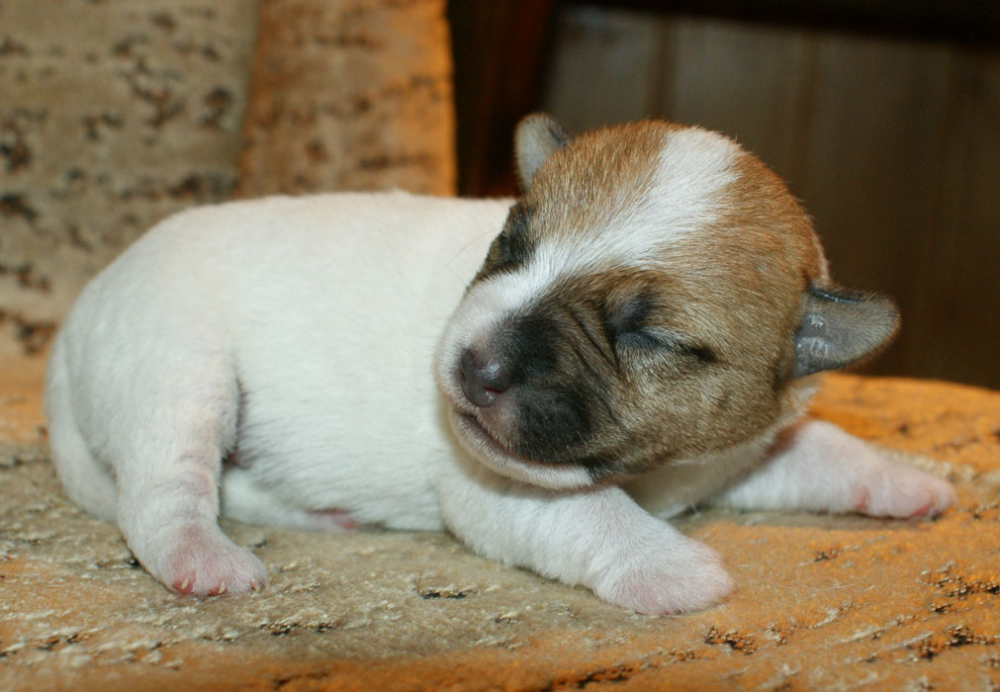 24.12.2013
- Urodzi³y siê szczeniaki po córce naszego Int., Multi.Ch. FOR PLEASURE of
the Hunters Pride - FOR YOU BALAO Magor, ojcem miotu jest Ch.Pl.,
M³.Ch.Pl., INFERNO Balao.
 09-10.11.13 Miêdzynarodowa wystawa w
Kielcach - Int. Multi.Ch. FOR PLEASURE Balao - Najlepszy Weteran 09-10.11.13 Miêdzynarodowa wystawa w
Kielcach - Int. Multi.Ch. FOR PLEASURE Balao - Najlepszy Weteran
TO BE OR NOT TO BE Balao - I wybitnie
obiecuj¹cy
 27.10.2013
- Miêdzynarodowa wystawa w Poznaniu ( Zwyciêstwo Polski ) 27.10.2013
- Miêdzynarodowa wystawa w Poznaniu ( Zwyciêstwo Polski )
GANGSTA'S PARADISE
Balao -
CACIB, BOB
Int. Multi.Ch. FOR PLEASURE Balao wystawiany w klasie weteranów Best Veteran
i po raz koleny BOB
TO BE OR NOT TO BE Balao - Best Puppy
 20.10.2013
- Ostatni w naszej hodowli miot po FIRST FLASH z Jerene. Tym razem tylko
jeden piesek ENJOY THE SILENCE Balao 20.10.2013
- Ostatni w naszej hodowli miot po FIRST FLASH z Jerene. Tym razem tylko
jeden piesek ENJOY THE SILENCE Balao
 04-05.10.2013
- Miêdzynarodowa
wystawa w
Baia Mare - GOOD DAY SUNSHINE Balao - 2 x CACIB, 2 x BOB, ukoñczy³y
championat Rumunii 04-05.10.2013
- Miêdzynarodowa
wystawa w
Baia Mare - GOOD DAY SUNSHINE Balao - 2 x CACIB, 2 x BOB, ukoñczy³y
championat Rumunii

22.09.2013
-
Klubowa wystawa Dogów Niemieckich w Zgierzu - GOOD DAY SUNSHINE Balao
- Zwyciêstwo Klubu, BOB, II BIS,
GANGSTA'S PARADISE Balao - Zwyciêzca Klubu.
Syn MICHELLE MA BELLE Balao i HEARTBREAKER Balao - ALTER EGO Remegnum -
M³odzie¿owy Zwyciêzca Klubu
 14.09.2013
- Krajowa wystawa psów w Warszawie - Int. Multi.Ch. FOR PLEASURE Balao
wystawiany w klasie weteranów Best Veteran, BOB oraz III BOG 14.09.2013
- Krajowa wystawa psów w Warszawie - Int. Multi.Ch. FOR PLEASURE Balao
wystawiany w klasie weteranów Best Veteran, BOB oraz III BOG
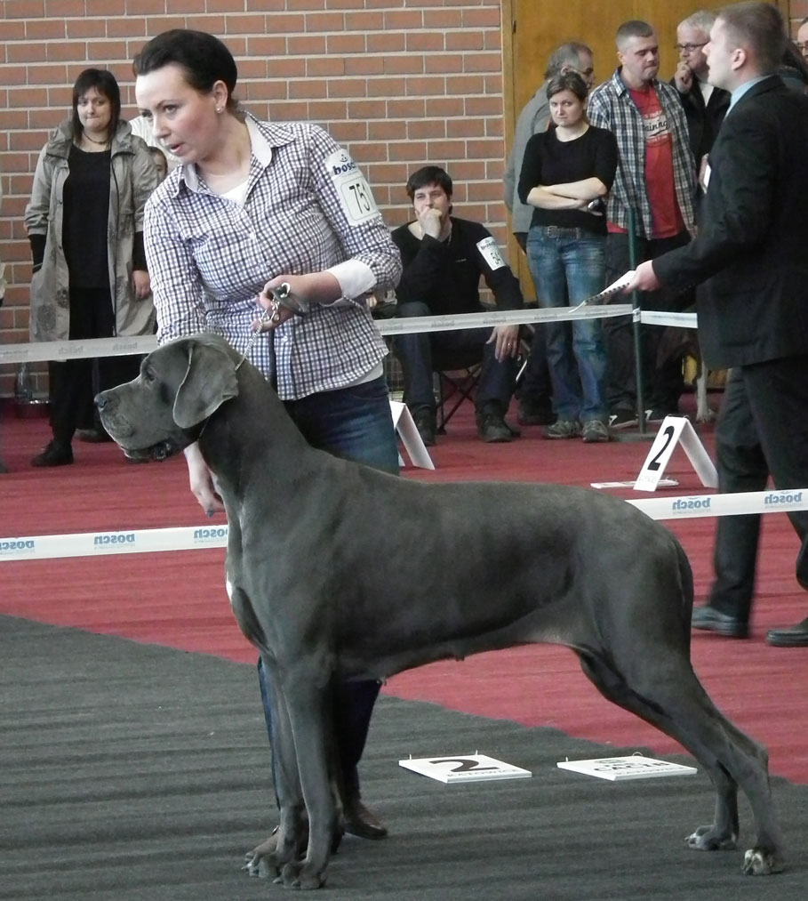
02-04.08.2013
- Miêdzynarodowa
wystawa w
Druskiennikach - LOVE STORY Balao i GOOD DAY SUNSHINE Balao ukoñczy³y
championat Litwy
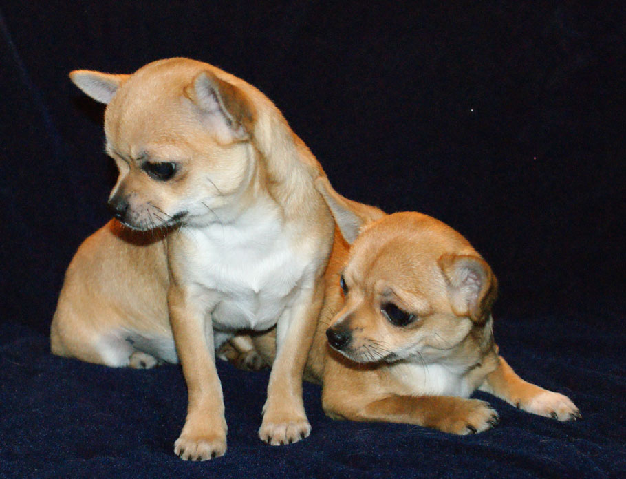
29.06.2013 - na œwiaty przysz³y ma³e CHIHUAHUA
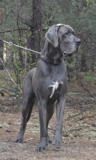
09.06.2013
-
Krajowa wystawa w
Lublinie - GANGSTA'S PARADISE
Balao - CAC, BOS - tydzieñ po siostrze równie¿ ukoñczy³ Championat
Polski
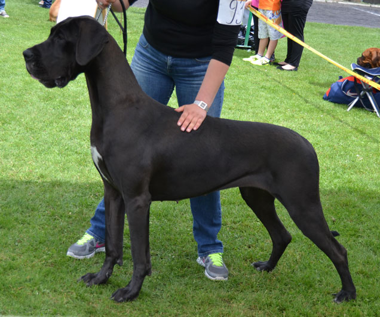
02.06.2013
-
Krajowa wystawa w
Sanoku - GOOD DAY SUNSHINE
Balao - CAC, BOS, BOB - ukoñczy³a Championat Polski
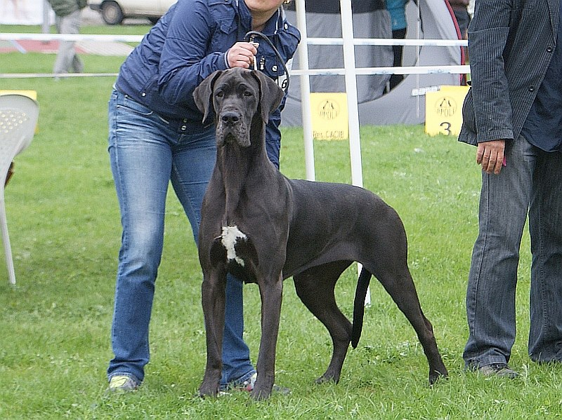 29.04.2013
- Miêdzynarodowa wystawa w Opolu- GOOD DAY SUNSHINE Balao - CAC, CACIB
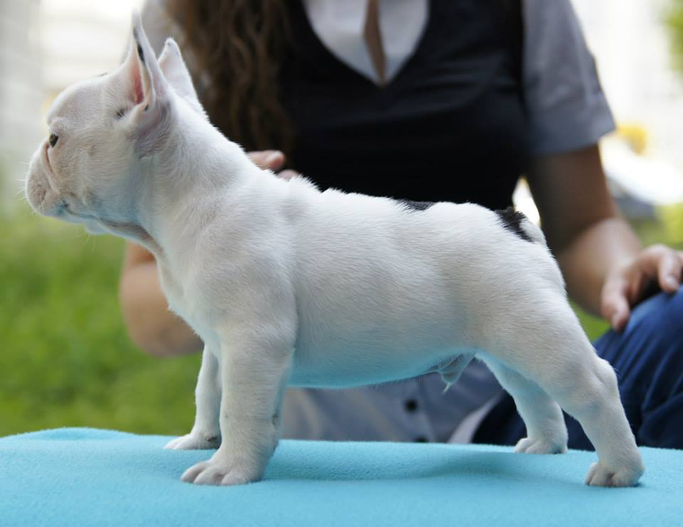
16.04.2013
- Na œwiat przyszed³ Tubiœ czyli TO BE OR NOT TO BE Balao. Rodzicami s¹
Multi.Ch. NOIR NOTE Balao oraz Ch.Pl.
FOLLOW ME Ten Years After.
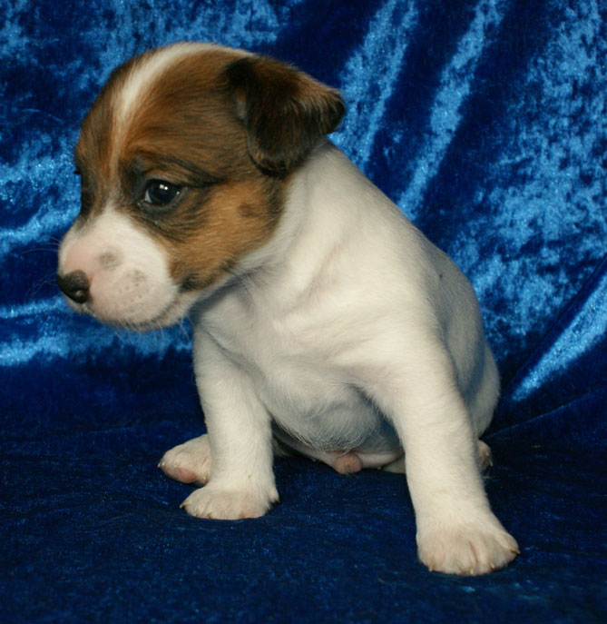 19.03.2013
- Urodzi³y siê szczeniaki po LOLICIE Balao, ojcem miotu jest Ch.Pl.,
M³.Ch.Pl., INFERNO Balao. Szczeniêta maj¹ w³os szorstki i z³amany
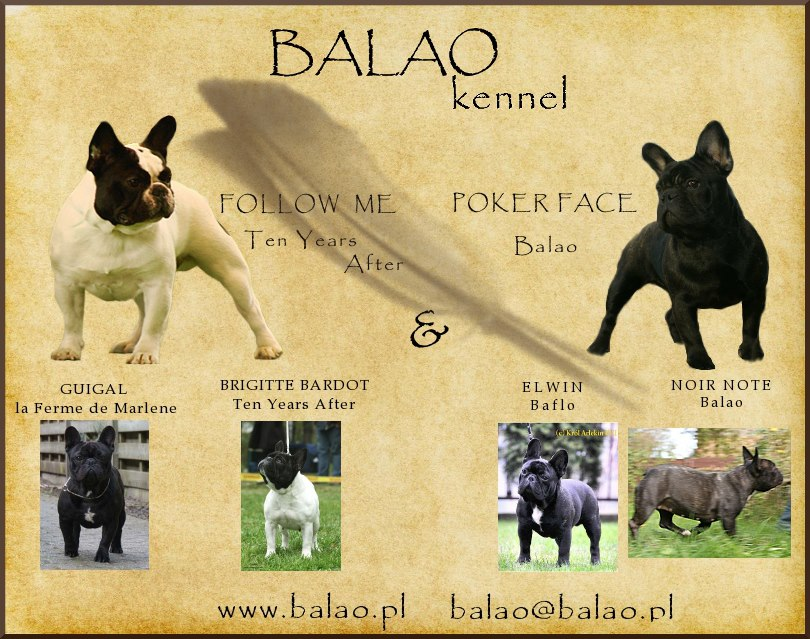 06.02.2013
- POKER FACE Balao zosta³a mam¹, ojcem miotu jest Ch.Pl.
FOLLOW ME Ten Years After. Jest dwóch ch³opców SHERLOCK HOLMES i SIRIUS
BLACK
i jedna suczka SUNSHINE REGGAE
Zdjêcia szczeni¹t mo¿na
zobaczyæ
w dziale
"MIOT S" czyli klikaj¹c link :)
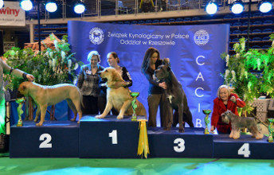 03.02.2013
- Miêdzynarodowa wystawa w Rzeszowie- GANGSTA'S PARADISE Balao - CAC, CACIB,
BOB, III BOG
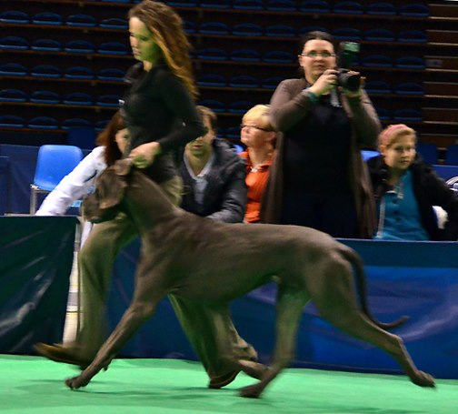 20.01.2013
-
Krajowa wystawa w Bêdzinie GANGSTA'S PARADISE
Balao - CAC, BOS, BOB
|